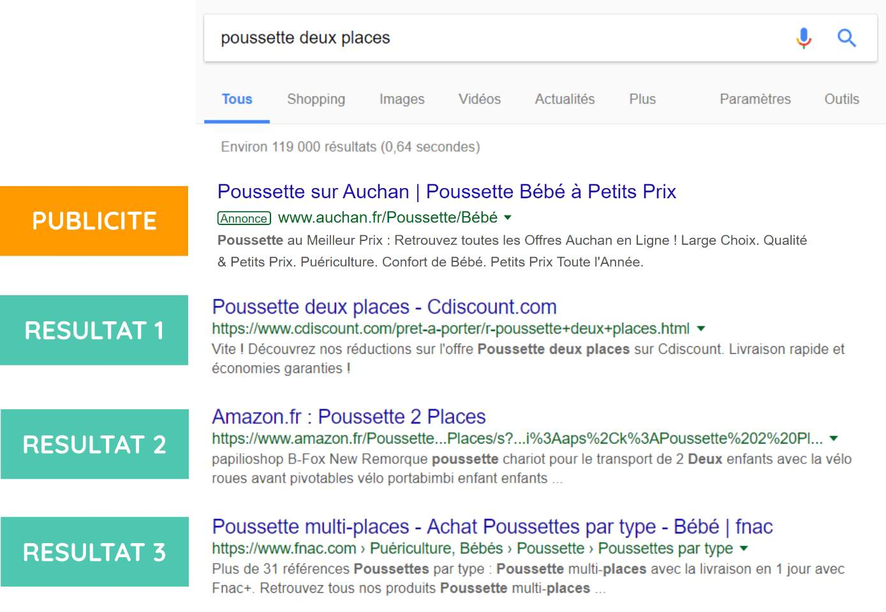

Maintenant que vous savez faire une recherche par mots-clés, découvrez ce qu'il se passe après avoir lancé votre recherche :
Imaginons que vous écrivez : "Poussettes deux places" dans votre barre de recherche. Le moteur de recherche va réfléchir quelques secondes et vous proposer différents résultats. En voici des exemples :
